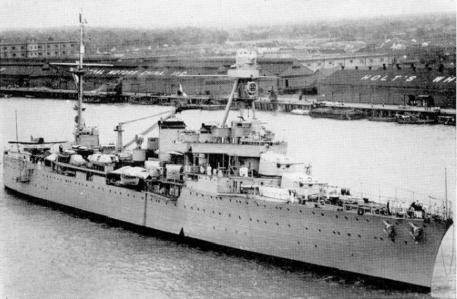
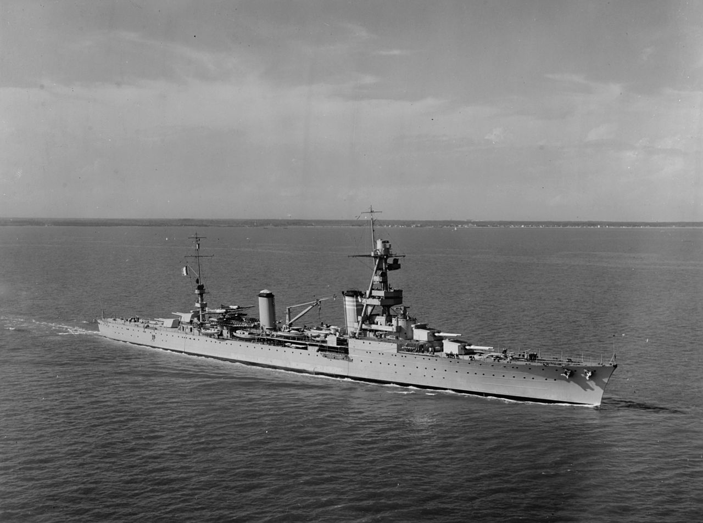

| Les Croiseurs | |||
|---|---|---|---|
|  | Classe Duguay-Trouin, Duguay-Trouin |
Le Duguay-Trouin est un croiseur leger de classe Duguay-Trouin, dite de "7 500 tonnes". Il sera en service dans la Marine nationale francaise de 1923 a 1952. Il est le premier navire important mis en chantier en France apres la Premiere Guerre mondiale et servira pendant la Seconde Guerre mondiale et la guerre d'Indochine. Il doit son nom au corsaire malouin Rene Duguay-Trouin (1673-1736). Sa carriere fut une des plus longues des navires de l'epoque. Mis en service le 15 fevrier 1927. Il commence sa carriere militaire en 1939-1940 a Dakar (Senegal) dans une escadre franco-britannique constituee pour rechercher les << cuirasses de poche >> allemands qui mene une guerre de course contre les navires de commerce en l'Atlantique. Modernistion en 1944 : 6 canons de 40 mm et 20 canons de 20 mm et 1 radar SF-1 ont ete embarques. Le 28 mai 1947, au debut de la guerre d'Indochine, il quitte Toulon, a destination de Diego-Suarez. Le 13 novembre 1947, il arrive a Saigon. De 1948 a octobre 1951, il sert d'appui feu et de soutien aux Commandos de debarquement. Il est alors le navire amiral de la division Navale d'Extreme Orient en Indochine. Le 22 octobre 1951, il quitte Saigon pour Toulon, ou il est desarme le 29 mars 1952. |
Longueur : 181,30 m Maitre-bau : 17,50 m Tirant d'eau : 6,14 m, 6,30 m (arme) Deplacement Normal : 7.500 tonnes Port en lourd : A pleine charge : 9.500 tonne Propulsion : 4 turbines Parsons a simple reduction. 8 chaudieres Guyot Puissance : 102 000 ch Vitesse : normale 30 noeuds - aux essais 33 noeuds |
|  | Classe Suffren, Suffren |
Le Suffren etait un croiseur lourd de classe Suffren, ayant servi dans la Marine nationale francaise. Il fut, comme beaucoup d'autres navires avant lui, nomme en l'honneur du vice-amiral Pierre Andre de Suffren. Au debut du mois de juin 1940, les croiseurs Suffren, Duquesne, Tourville et Duguay-Trouin ainsi que trois contre-torpilleurs participerent a l'operation Vado en represailles contre l'Italie qui avait declare la guerre a la France le 10 juin 1940. Plus tard en juin, le Suffren participa a une operation commune avec la Royal Navy -- la derniere avant l'Armistice. Il fut declasse le 1er octobre 1947, devenu ponton ecole a Toulon, il prit le nom d'Ocean. Durant cette epoque, il servit au sein du Groupe d'ecole d'armes pour la formation a la lutte anti sous-marine jusqu'a l'ouverture du centre d'instruction naval de Saint-Mandrier en 1971. C'est un des derniers batiments francais ou les marins dormaient encore dans des hamacs car il n'etait pas equipe de couchettes. Quatre chaloupes pour le transport des eleves de l'ecole, communement appelees << barcasses >>, constituaient sa drome. Seul un groupe electrogene de secours fonctionnait, le chauffage etant assure par un << chaland chauffeur >> accoste au ponton. |
Longueur : 194 metres Maitre-bau : 9,1 m Tirant d'eau : 6,35 m Deplacement : 10 000 tonnes Port en lourd : 12 928 tonnes Propulsion 3 turbines Rateau-Bretagne 8 chaudieres Guyot du Temple Puissance : 90 000 ch Vitesse : 31 noeuds (57 km/h) |
Merci, vous pouvez soutenir le site tout en l ameliorant avec les liens ci-dessous ^^ Un petit don : XX Github de la page : REDIRECTION VERS GITHUB Mon serveur Discord : REDIRECTION VERS DISCORD
{kind=link}
{kind=link}